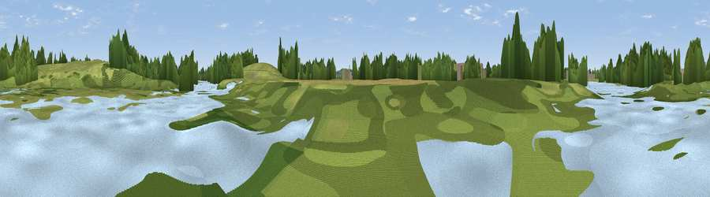

Viewpoint near Dorney
#45264 in England · top 75% of its area beats it · near Dorney · footpathWhere it is
The exact computed spot (SU 93404 79307). Click the marker for map links.
Public access: a public right of way passes within 57 m of this spot. Computed from Natural England's CRoW access layer and OpenStreetMap rights of way — not the legal definitive map. Always verify locally.
The view, rendered

A 360° render of this exact spot computed from the terrain model, tree cover and land cover — summer colours, afternoon light, calibrated against photographs of famous viewpoints. Real trees, hedges and buildings will differ in detail.
The panorama
Grey silhouette: terrain skyline in each direction (720 bearings, Earth curvature and refraction included). Dashed green: skyline with trees (+15 m) and buildings (+8 m) as obstacles. Blue strip: how far the ground is visible on each bearing.
Where the view opens
Wedge length = distance to the farthest visible ground on that bearing (vegetation-aware). Rings at 10, 25 and 50 km.
What fills the view
44% grassland · 36% woodland · 10% water · 6% cropland · 4% built-up
Angular shares of the visible panorama (visual magnitude), not map area. Landscape diversity 0.55 (0–1 Shannon).
Key numbers
More beautiful places nearby
The staircase of upgrades: each row has a higher view potential than everything closer. Driving times are estimates from straight-line distance, calibrated against real road routing — check an actual route before setting out.
| Place | Direction | Drive | Score |
|---|---|---|---|
| Viewpoint near Taplow | NW · 4 km | ~9 min | 26.3 |
| Viewpoint near Oakley Green | S · 4 km | ~9 min | 26.7 |
| Windsor Castle | ESE · 4 km | ~10 min | 39.8 |
| Viewpoint near Fawley | WNW · 21 km | ~36 min | 48.8 |
| Viewpoint near Whiteleaf | NNW · 26 km | ~42 min | 58.2 |
| Viewpoint near Kingston Blount | NW · 27 km | ~43 min | 67.4 |
| Viewpoint near Chinnor | NW · 27 km | ~43 min | 67.9 |
| Viewpoint near Kingston Blount | NW · 27 km | ~43 min | 70.1 |
51.50498, -0.65563 · source: osm viewpoint · position refined by local search. Computed location — check access rights before visiting.